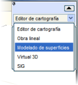
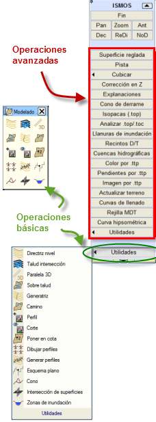
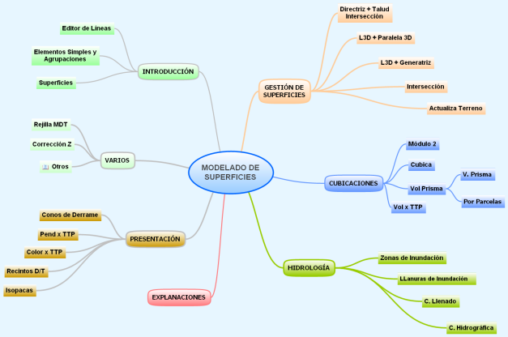

| |
|
YÜZEY MODELLEME: Giriş
|
Bu modüle, SAYISAL HARİTACILIK modülünden, Yüzey Modelleme adlı seçeneği seçerek erişilir. Bu, tarihsel nedenlerle ISMOS olarak da adlandırılan toprak işleri modülünün menüsüne götürür. ISTRAM®/ISPOL® paketinin bu modülü, yarma ve dolgu işlerinin hesaplanması ve tasarımı, genel olarak alan ve hacimlerin ölçülmesi gibi, proje aşamalarında veya endüstriyel toprak ve kaya işletmeciliği, madencilik faaliyetleri, atık depolama alanları, agrega stoklarının envanteri, mineral stoklarının hacim hesaplaması, imar edilecek alanlarda tesviye, golf sahaları tasarımı ve hacim hesaplaması veya sadece yeni üç boyutlu yüzeylerin tasarımını gerektiren herhangi bir iş için tasarlanmıştır. Aynı zamanda, aynı anda birden çok platformun (rüzgar santralleri) tanımı ve hesaplanması, yaklaşım dolguları, taşkın sahaları, su toplama havzaları, kotlara ve eğimlere göre haritalar oluşturma, 3D gridler oluşturma vb. gibi işlemleri gerçekleştirmek için bir dizi yardımcı programa sahiptir. ISTRAM®/ISPOL® bu modül aracılığıyla aynı anda birden çok yüzeyi yönetir ve aralarında işlemler gerçekleştirir. Modülün yardımcı programları, proje müellifinin bu türden herhangi bir işin tam geometrik tasarımını yapmasına olanak tanır. İstenen eğimde şevler, palyeler, erişim yolları ve genel olarak her türlü enkesit otomatik olarak oluşturulur. Erişim yollarının tasarımı veya yüzey çiftleri arasındaki kesişim konturlarını oluşturmak için yapım yardımcıları bulunmaktadır. Farklı iş durumlarına ait iki topografik haritadan veya temel topografik harita ve tasarım yüzeylerinden yola çıkarak, aynı anda birkaç kütlenin yarma ve dolgu alanları ve hacimleri, herhangi bir güzergaha göre boyuna kesitlerin alınması veya aynı zamanda bitmiş paftalar oluşturmak için düzenlenebilen bir dizi hacim hesaplama kesiti elde etmek mümkündür. Tüm hacim hesaplamaları, hesaplama alanını planda ve ayrıca kotta sınırlamaya izin verir, böylece hacim-alan eğrileri elde edilebilir. Modülün tüm işlemleri interaktif ve grafiksel olarak gerçekleştirilir, böylece tasarımcı herhangi bir verinin değişikliğini ve bunun sonuç yüzey veya hacim hesaplamaları üzerindeki etkisini anında görebilir ve böylece birkaç dakika içinde optimum bir tasarıma verimli bir şekilde ulaşmasını sağlayacak çok sayıda varyantı deneyebilir. Tüm hesaplama sonuçları ekranda görünür ve ayrıca bunların grafik çıktıları ve listeleri de sunulur. Grafik çıktılar, SAYISAL HARİTACILIK modülünün tüm yardımcı programları tarafından kısıtlama olmaksızın işlenebilir ve dolayısıyla kullanıcı tarafından değiştirilebilir ve temel topografik dosyalarla ortak formattaki veri dosyalarına kaydedilebilir. YÜZEY MODELLEME modülü, kullanıcıya sunulan tüm araçları bir araya getiren dikey bir menüden oluşur. Bu araçlar iki kategoriye ayrılır: temel işlemler için araçlar ve gelişmiş işlemler için araçlar. Birinciler, alt kısımdaki [Yardımcı Programlar] alt menüsü altında gruplandırılmıştır ve ayrıca özel bir araç çubuğunda da mevcuttur. 
|